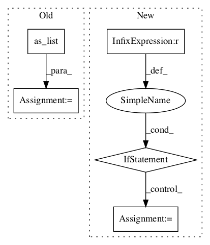

534c4dc7423681faab78d1829c1ec3c31ffb8330,niftynet/layer/resampler.py,ResamplerLayer,_resample_inv_dst_weighting,#ResamplerLayer#Any#Any#,319

Before Change
knots_shape = [0] + list(range(2, out_rank + 1)) + [1]
knots_id = tf.cast(knots_id, COORDINATES_TYPE)
knots_id = tf.transpose(knots_id, knots_shape)
knots_shape = knots_id.get_shape().as_list()
// get values of N neighbours
batch_inputs = tf.unstack(inputs, axis=0)
batch_knots = tf.unstack(knots_id, axis=1)
After Change
if batch_size == n_coords:
samples = [tf.gather_nd(img, knot)
for (img, knot) in zip(batch_inputs, batch_knots)]
elif n_coords == 1 and batch_size > 1:
samples = [tf.gather_nd(img, batch_knots[0])
for img in batch_inputs]
else:
raise NotImplementedError
samples = tf.stack(samples, axis=1)
In pattern: SUPERPATTERN
Frequency: 4
Non-data size: 5
Instances
Project Name: NifTK/NiftyNet
Commit Name: 534c4dc7423681faab78d1829c1ec3c31ffb8330
Time:
Author: null
File Name: niftynet/layer/resampler.py
Class Name: ResamplerLayer
Method Name: _resample_inv_dst_weighting
Project Name: asyml/texar
Commit Name: da37438735fd4b845bb0874562bd071865c480bb
Time:
Author: null
File Name: texar/modules/encoders/rnn_encoders.py
Class Name: RNNEncoderBase
Method Name: __init__
Project Name: tensorflow/lattice
Commit Name: 1c75176947730de8322acf6ad996096625e92e3a
Time:
Author: null
File Name: tensorflow_lattice/python/rtl_layer.py
Class Name: RTL
Method Name: call
Project Name: deepmind/sonnet
Commit Name: 2faf7acd48088783ab4d8507cc3eb1e74430b3ad
Time:
Author: null
File Name: sonnet/src/reshape.py
Class Name: Reshape
Method Name: _initialize